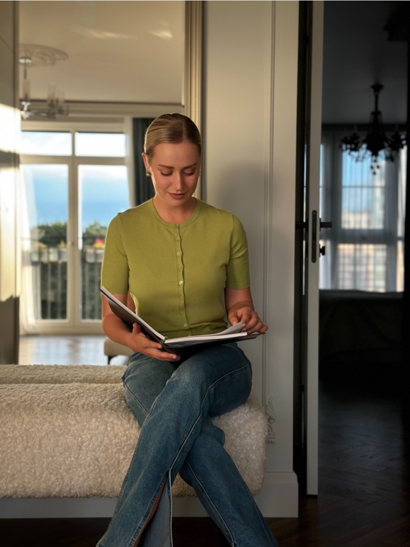

50 минут · онлайн
Индивидуальная встреча
Чтобы разобраться, что с вами происходит, и наметить, что можно изменить.
5 000 ₽
Ориентир · ≈ $60 · ≈ 60 USDT
Записаться индивидуально ↗Индивидуальная и парная терапия онлайн
Я Анастасия Гоева, клинический КПТ-психолог и семейный психолог. Помогаю справляться с сильными эмоциями, лучше понимать себя и замечать, когда привычные реакции снова заводят отношения в тупик. На встречах мы ищем, что можно попробовать по-другому.

01 / Запросы
Выберите тему, которая вам близка, и нажмите на «+».
Вы прокручиваете варианты будущего, перепроверяете решения и с трудом отдыхаете. Возможно, страх или паника уже влияют на то, куда вы ходите и на что решаетесь.
Хочется близости, но страшно доверять или говорить о своих потребностях. Чужое настроение легко становится мерилом того, всё ли в порядке между вами.
Тревога, злость, стыд или вина приходят так сильно, что сложно остановиться и выбрать, как ответить.
Вы замечаете ошибки быстрее, чем успехи, сравниваете себя с другими и с трудом отстаиваете свои интересы, когда боитесь кого-то разочаровать.
Вы видите знакомый сценарий: откладываете важное, избегаете разговора или соглашаетесь через силу. На встречах можно разобраться, что удерживает этот сценарий, и попробовать другие реакции.
Переезд, расставание, смена работы или потеря привычных ориентиров. Можно прийти, даже если пока трудно сформулировать, чего вы хотите.
Правила вокруг еды, тревога после приёмов пищи или чувство вины отнимают много сил. С трудностями пищевого поведения я работаю в рамках своей компетенции.
Разговор о быте или будущем снова превращается в спор. Чем настойчивее один просит разговора, тем сильнее другой закрывается. Этот круг может усиливаться после переезда, потери работы, болезни или утраты.
Вы пытаетесь понять, есть ли желание продолжать отношения, хотите обсудить возвращение после разрыва или ищете способ разговаривать о детях, деньгах и совместных договорённостях после развода.
Открылась измена, скрытая переписка или другая часть жизни партнёра, о которой вы не знали. Можно прийти, чтобы обсудить, что произошло, что для каждого значит доверие и чего вы хотите дальше.
Вы справляетесь с бытом и родительством, но реже делитесь тем, что важно, меньше чувствуете поддержку и скучаете по близости.
Трудно договориться о расходах, бюджете и ответственности. Разница в доходах или зависимость от денег партнёра осложняет разговор о потребностях.
Вы по-разному видите воспитание или место детей от предыдущих отношений. Можно также обратиться, если сложно говорить о переживаниях во время беременности, после её прерывания или потери, или если расходятся ваши представления о будущем семьи.
02 / Обо мне
Клинический КПТ-психолог и семейный психолог
Я работаю со взрослыми и парами. В индивидуальной практике специализируюсь на тревожно-фобических расстройствах и трудностях пищевого поведения. С парами работаю, когда привычные разговоры заканчиваются ссорой или молчанием, а говорить о близости, доверии и будущем становится трудно.
На встречах мы замечаем, как запускаются знакомые реакции и что за ними стоит. Это помогает постепенно расширять выбор: говорить о важном, выдерживать сложные эмоции и пробовать по-другому действовать в ситуациях, которые раньше заканчивались одинаково.
Член Ассоциации когнитивно-поведенческой психотерапии с 2025 года.
03 / Подход
Мы связываем то, что происходит на встрече, с вашей повседневной жизнью. Вместе определяем, что хочется изменить и какие небольшие шаги можно попробовать.
04 / Консультации
Онлайн. Выберите, хотите ли вы прийти самостоятельно или вместе с партнёром.
50 минут · онлайн
Чтобы разобраться, что с вами происходит, и наметить, что можно изменить.
5 000 ₽
Ориентир · ≈ $60 · ≈ 60 USDT
Записаться индивидуально ↗80 минут · онлайн
Чтобы вместе разобраться, что происходит в отношениях и где застревает разговор.
7 000 ₽
Ориентир · ≈ $85 · ≈ 85 USDT
Записаться на парную встречу ↗Суммы в USD и USDT ориентировочные, по пересчёту на 10 ноября 2026 года. Оплата в рублях или USDT. Точную сумму в USDT уточним в Telegram до оплаты.
05 / Условия
Напишите в Telegram и укажите, хотите ли вы индивидуальную или парную встречу. Мы согласуем время и способ оплаты. Время закрепляется за вами после полной предоплаты.
Перенести встречу можно, предупредив не менее чем за 72 часа. Если отменяете встречу не менее чем за 72 часа до начала, я возвращаю оплату полностью.
Встреча заканчивается в оговорённое время. Если в первые 15 минут вы не подключились и не вышли на связь, встреча считается проведённой, оплата не возвращается.
Первая встреча — полноценная платная консультация. Мы знакомимся, обсуждаем запрос и намечаем первые шаги. После неё вы и я можем решить, подходит ли нам продолжать работу.
06 / Образование
07 / FAQ
Нажмите на «+», чтобы открыть ответ.
Напишите мне в Telegram. Перед бронированием мы уточним доступный способ оплаты в рублях или USDT и точную сумму.
Обсудим, что привело вас сейчас, что уже пробовали и чего вы ждёте от работы. Можно прийти с конкретным вопросом или начать с того, что трудно сформулировать.
По возможности выберите тихое место, где можно говорить свободно, и проверьте интернет. В парном формате важно, чтобы каждый мог говорить и быть услышанным.
У каждого будет возможность рассказать, как он видит ситуацию. Вместе посмотрим, что происходит между вами в трудные моменты и как можно говорить о том, что каждому важно.
Это зависит от вашего запроса и целей. Мы обсудим ожидания на первой встрече и сможем уточнять их по ходу работы.
Подходящий ритм обсудим вместе с учётом вашего запроса, формата и расписания.
Это совместная работа, в которой мы разбираем трудности на конкретных примерах, ищем понятные ориентиры и пробуем менять привычные реакции.
До начала работы можно обсудить условия конфиденциальности, её границы и особенности парного формата.
Сообщите об этом на первой встрече, чтобы мы могли обсудить подходящий формат работы. Вопросы о назначении и изменении лекарств обсуждаются с лечащим врачом.
В индивидуальной работе ориентиром может стать способность замечать тревогу раньше и выбирать, как действовать. В паре — возможность обсудить сложную тему, не возвращаясь сразу к привычной ссоре. Ваши ориентиры мы сформулируем вместе.
Сообщите об этом до записи. Мы обсудим, какой формат возможен с учётом профессиональных границ.
Если вам нужна консультация на английском или вы хотите заранее проверить, подходит ли вам платформа, уточните это в Telegram перед бронированием.
Если вам важно заранее понять, смогу ли я работать с вашим форматом отношений, уточните это до записи. Для первого сообщения достаточно короткого вопроса.
Мы можем вместе рассмотреть возможные решения и их последствия. Вы сможете выбрать, что подходит вам в вашей ситуации.
Telegram можно использовать для записи и организационных вопросов. Если вам важно заранее обсудить общение между встречами или границы в соцсетях, поднимите этот вопрос при знакомстве.
Можно сказать, что тема пока слишком трудная, попросить паузу или уточнить, зачем я задаю вопрос. Вы сами решаете, чем готовы поделиться.
Да. Основные программы указаны в разделе об образовании. Вопросы о дополнительном обучении, супервизии, интервизии и личной терапии можно задать на первой встрече.
Если я пойму, что вашему запросу нужен другой формат помощи или другой специалист, мы сможем обсудить это и возможные следующие шаги.
Вы можете сказать о своём решении на встрече или написать мне. Если хотите, на последней встрече можно подвести итоги.
08 / Полезное
Начните с того, что вам сейчас ближе. Все четыре материала бесплатные. Их можно открыть и сохранить в PDF.
Для себя · рабочая тетрадь
50 вопросов о партнёре, чтобы яснее понять свои ожидания, желания и то, что для вас важно в близости.
Открыть PDFДля пары · опросник
Повод поговорить о семье, ценностях и будущем. Подойдёт в начале серьёзных отношений и в моменты, когда нужно заново договориться о важном.
Открыть PDF 19 МБДля себя · дневник
Дневник саморефлексии, чтобы отмечать своё состояние и замечать, что влияет на настроение, энергию и тревогу.
Открыть PDFДля себя · практический гид
Гид по самопомощи с пошаговыми упражнениями для моментов, когда тревожные мысли и напряжение мешают сосредоточиться.
Открыть PDFБольше материалов и заметок о психологии и отношениях.
09 / Видео
Если хотите познакомиться со мной до первой встречи, можно начать с одного из интервью.

YouTube · @ogogoeva Психология в живом разговоре Мой канал об эмоциях, отношениях и том, как лучше понимать себя. Перейти на канал10 / Запись
Напишите, хотите ли вы прийти самостоятельно или вместе с партнёром. Для записи достаточно короткого сообщения. Детали можно обсудить уже на встрече.
Написать в Telegram ↗